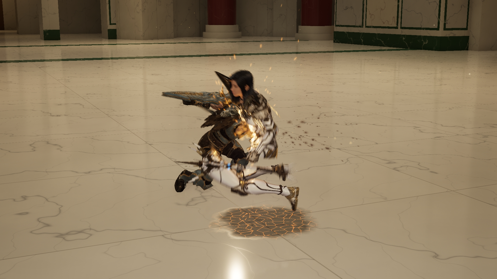
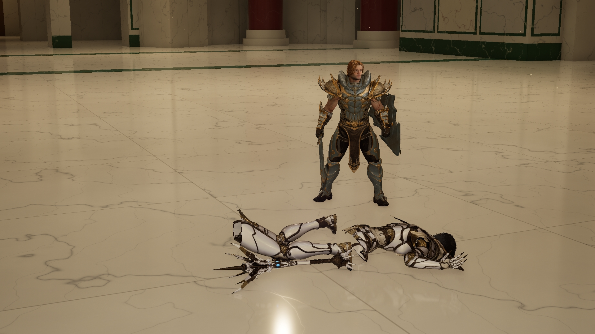
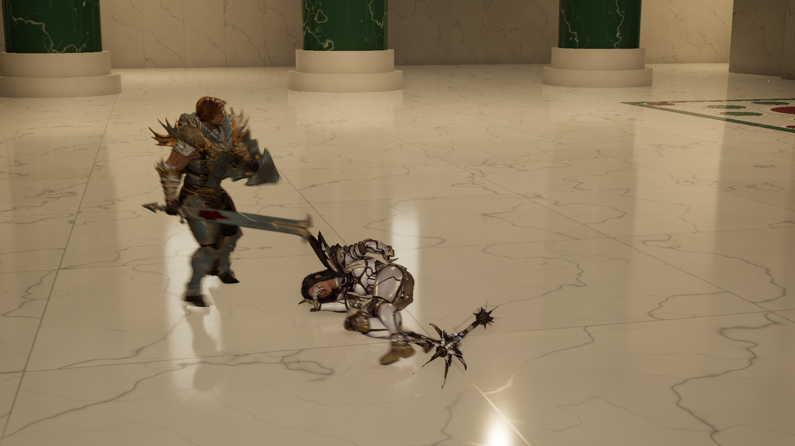
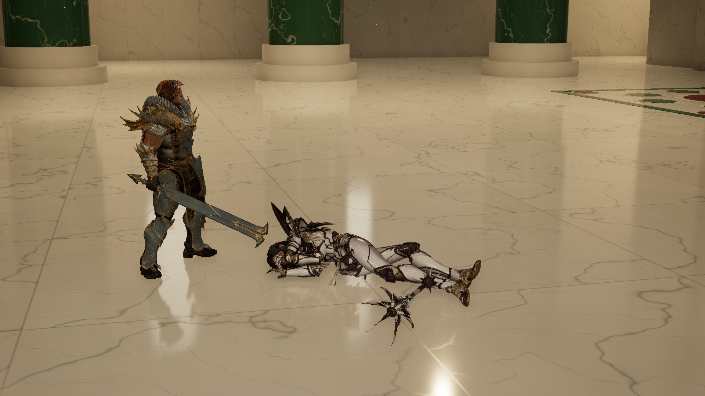
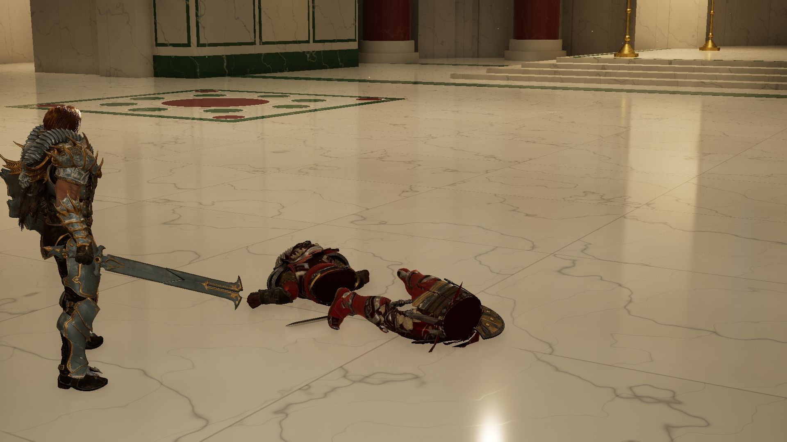

死亡动作 · 本轮中间实拍
保留已定型的造型，继续修正真实命中后的身体、武器和布料收尾。
Sovereign · 重斩断身顺刃带出
上半身顺着实际刀刃挥动方向带出；减少侧向滑行，加快落地收稳。保留原模型和打击、死亡、武器落地声音。已验证刀刃实际接触和复活恢复。
仍需评审手臂落地和断口轮廓。Dawnknight 战袍下摆垂落新版见下方独立短片。普通倒地新版见下方独立短片，与断身分别评审。
接触后的分离

收尾姿态

Sovereign · 喊声、松手侧倒与落腿收尾
保留原版脸、头发、盔甲和向前失衡侧倒的动作前段，重做末段腿部过度蜷缩：腿长不变，落地后自然落开。沿用女声死亡喊声、真实掉落原武器和落地声音。实际命中、复活恢复及原资源未改动均已验证。上半身和手臂保留原动作，整条仍待视觉评审；没有使用上次失败的物理接管。
侧倒过渡与最后姿态


Dawnknight · 重斩与战袍下摆垂落
在顺实际刀刃方向带出、加快落地收稳的基础上，战袍下摆以真实腰部断边为支点向下弯折，改善倒地后像硬板竖起的问题。保留原战袍材质、徽章、原剑盾掉落和打击、死亡、落地声音。实际命中、两个战袍片及徽章的复活恢复已验证。布料轮廓和断口仍待视觉评审，并非完整布料仿真。
收尾姿态放大

其他本轮实拍
全部阶段返修 ↗ · Lightblade 最早原衣服与已选蓝色双剑 ↗
主页面新版整合片已同步本页修正，独立短片保留用于放大评审。